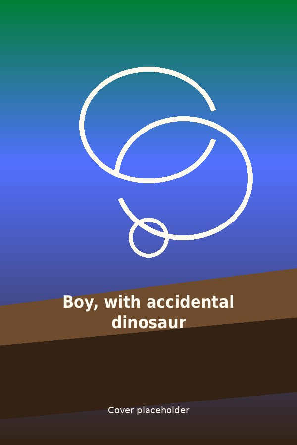
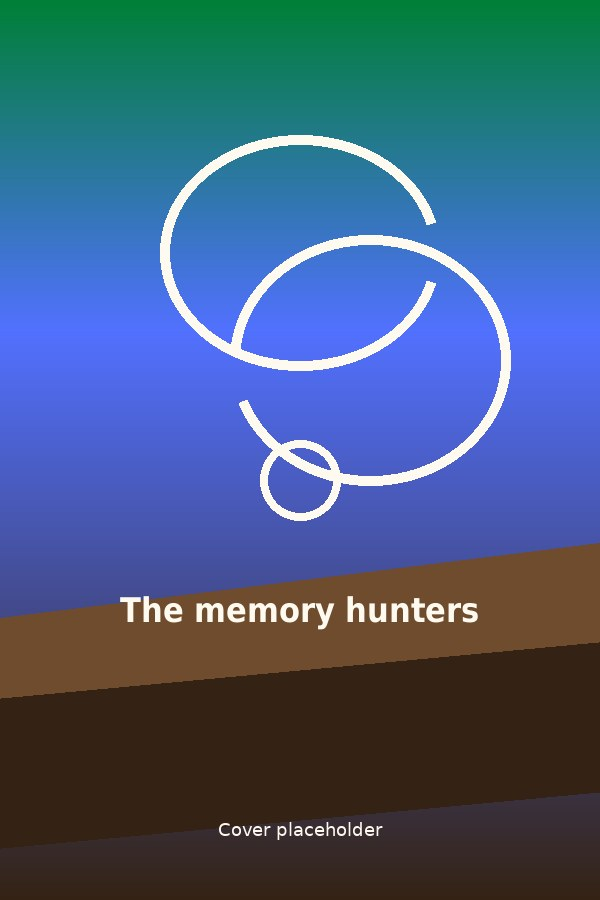
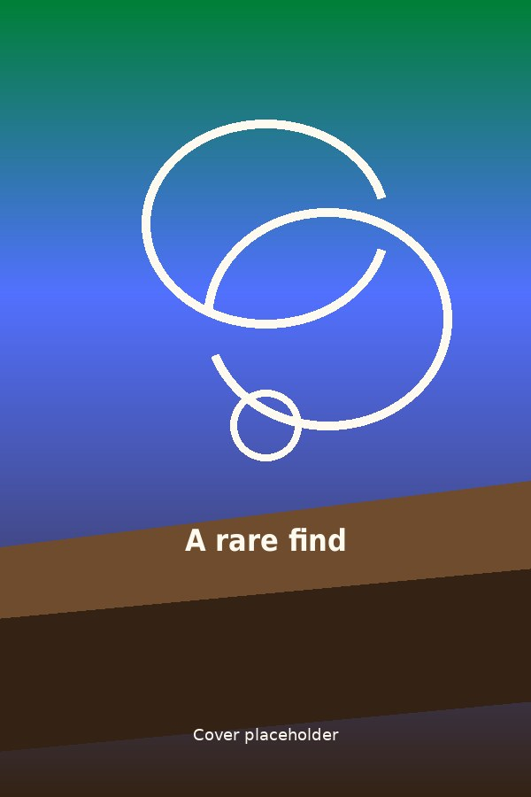
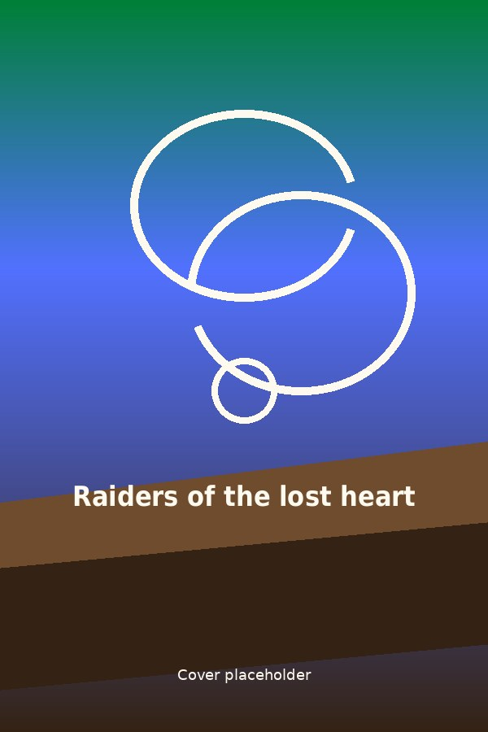
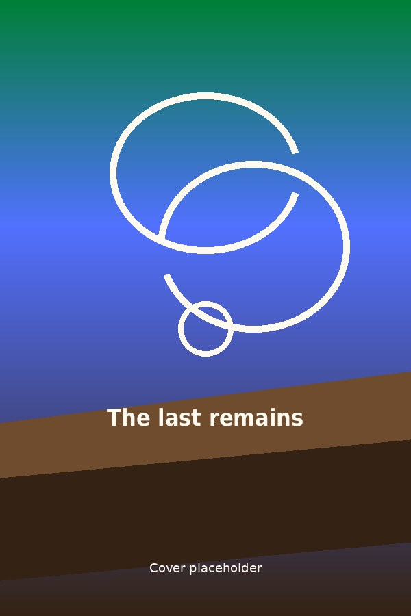
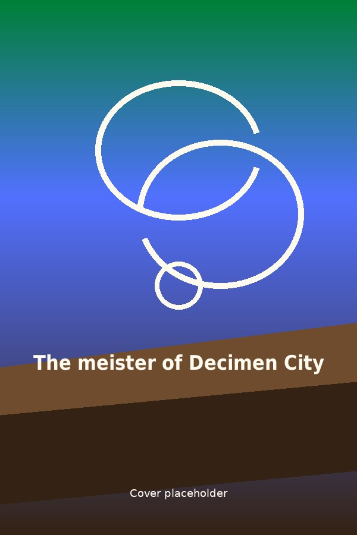

Dig into dinosaurs, fossils, archaeology, ancient secrets, buried histories, and adventures from the past with these downloadable titles on Libby and Hoopla.
The geomagician
Jennifer Mandula
Mar 2026
When a Victorian fossil hunter discovers a baby pterodactyl, she vows to protect him, with the help of a fellow scholar—her former fiancé—in this enchanting and transporting historical fantasy.
eBook on Libby
Audiobook on Libby

Boy, with accidental dinosaur
Ian McDonald
Feb 2026
An orphan in search of a place to rest his head and a job to weigh down his pockets, Tif Tamim has bounced from circus to circus, yearning for a chance to ride a prehistoric beauty under the sparkling lights of a big-top. When Tif frees a dino from an abusive owner and braves the roving gangs of the formerly-American west to bring the dino to safety, he catches someone’s eye. And boy, how those eyes dazzle Tif from the back of a bucking carnotaur.
eBook on Libby

The memory hunters
Mia Tsai
Jul 2025
Inception meets Indiana Jones in this cinematic, slow burn, romantic fantasy following a headstrong academic and her equally stubborn bodyguard as they unearth an ancient secret that rocks the foundations of their society…and challenges their unspoken love for one another. A sapphic, dark academia-adjacent, climate dystopia -- with mushrooms -- for readers of Blood Over Bright Haven, A Memory Called Empire, and Ink Blood Sister Scribe.
eBook on Libby
eBook on Hoopla
Audiobook on Hoopla
Unearth a Story • Summer 2026
Digital Summer Reading
at the Springfield Township Library

A rare find
Joanna Lowell
Jun 2025
When an aspiring archaeologist teams up with her childhood enemy for a treasure hunt, they find it impossible to bury their growing feelings, in this charming queer historical romance.
eBook on Libby
Audiobook on Libby
Follow me to Africa
Penny Haw
Feb 2025
It's 1983, and seventeen-year-old Grace Clark has just lost her mother when she begrudgingly accompanies her estranged father to an archaeological dig at Olduvai Gorge on the Serengeti plains of Tanzania. Here, seventy-year old Mary Leakey enlists Grace to sort and pack her fifty years of work and memories. Their interaction reminds Mary how she pursued her ambitions of becoming an archaeologist in the 1930s by sneaking into lectures and working on excavations.
eBook on Libby
eBook on Hoopla
Audiobook on Hoopla

Raiders of the lost heart
Jo Segura
Dec 2023
Forced to co-lead an expedition deep into the Mexican jungle with her nemesis, archaeologist Dr. Corrie Mejía realizes they must work together to deal with greedy artifact smugglers, the Mexican authorities and the lies between them before everything they’ve worked hard for ends in ruin.
Audiobook on Libby
Unearth a Story • Summer 2026
Digital Summer Reading
at the Springfield Township Library
The secrets beneath
Kimberley Woodhouse
Sep 2023
Anna Lakeman has spent her life working alongside her paleontologist father. When they find dinosaur bones, a rich investor tries to take over their dig. As Anna fights for recognition of her work and reconnects with an old beau, tensions mount and secrets are unburied. How can they keep the perils of the past from threatening their renewed affection?
eBook on Hoopla
Audiobook on Hoopla
Excavations
Kate Myers
Jul 2023
Featuring: Elise, Kara, Zara, and Patty, four very different women with varying problems (including issues with each other). The discovery: While working on an archeological dig in Greece where ancient sporting events occurred, they unearth a stunning find and must come together to deal with their obnoxious boss and save it. Why you might like it: This evocative debut expertly depicts excavation details and is "fresh, funny, intelligent, and deeply satisfying" (Kirkus Reviews).
eBook on Hoopla
Audiobook on Hoopla

The last remains
Elly Griffiths
Apr 2023
When the remains of a woman leads to the discovery of other missing women -- all linked to a spiritual wellness retreat, Dr. Ruth Calloway infiltrates an archaeology club to help DCI Harry Nelson find the truth, which places her life in danger and forces Nelson to face his feelings for her.
Audiobook on Libby
eBook on Hoopla
Audiobook on Hoopla
Unearth a Story • Summer 2026
Digital Summer Reading
at the Springfield Township Library

The meister of Decimen City
Brenna Raney
Mar 2023
Supergenius and quasi-villain Rex normally can’t go a week without accidentally endangering Decimen City with her science shenanigans. It’s been two weeks since her genetically engineered dinosaurs rampaged through town—a good streak for her—but the peace is broken when actual villain Last Dance sets his sights on Decimen. And he wants Rex’s help. Before Rex can say “I didn’t do it,” superheroes who’ve dragged her to jail on her worst days are crowding her lab to conscript her into quasi-herodom.
eBook on Hoopla
Audiobook on Hoopla
The fossil hunter
Tea Cooper
Aug 2022
From Tea Cooper comes the story of how a fossil discovered at London's Natural History Museum leads one woman back in time to nineteenth-century Australia and a world of scientific discovery and buried secrets.
Audiobook on Libby
eBook on Hoopla
Audiobook on Hoopla
The cretaceous past
Cixin Liu
May 2021
All the years of human civilization represent an infinitesimal fraction of the time since life first burgeoned on planet Earth. How likely is it, then, in those great depths of time, that humanity alone benefitted from the spark of intelligence which gave rise to culture? The answer he offers is unexpected, supposing an unlikely alliance between the largest creatures in the world of the deep past and some of the smallest. And it all begins with a toothache.